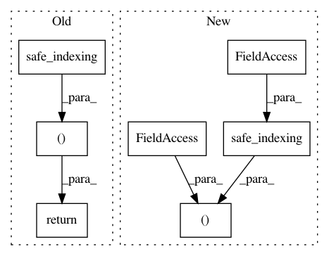

a19d398c1c974eb69d6e8e5e41d65500262089ce,imblearn/under_sampling/_prototype_selection/_neighbourhood_cleaning_rule.py,NeighbourhoodCleaningRule,_fit_resample,#NeighbourhoodCleaningRule#Any#Any#,139
Before Change
index_target_class = np.flatnonzero(selected_samples)
if self.return_indices:
return (safe_indexing(X, index_target_class), safe_indexing(
y, index_target_class), index_target_class)
else:
return (safe_indexing(X, index_target_class), safe_indexing(
y, index_target_class))
After Change
self.sample_indices_ = np.flatnonzero(selected_samples)
if self.return_indices:
return (safe_indexing(X, self.sample_indices_),
safe_indexing(y, self.sample_indices_), self.sample_indices_)
return (safe_indexing(X, self.sample_indices_),
safe_indexing(y, self.sample_indices_))
In pattern: SUPERPATTERN
Frequency: 3
Non-data size: 7
Instances
Project Name: scikit-learn-contrib/imbalanced-learn
Commit Name: a19d398c1c974eb69d6e8e5e41d65500262089ce
Time: 2018-09-13
Author: g.lemaitre58@gmail.com
File Name: imblearn/under_sampling/_prototype_selection/_neighbourhood_cleaning_rule.py
Class Name: NeighbourhoodCleaningRule
Method Name: _fit_resample
Project Name: scikit-learn-contrib/imbalanced-learn
Commit Name: a19d398c1c974eb69d6e8e5e41d65500262089ce
Time: 2018-09-13
Author: g.lemaitre58@gmail.com
File Name: imblearn/under_sampling/_prototype_selection/_tomek_links.py
Class Name: TomekLinks
Method Name: _fit_resample
Project Name: scikit-learn-contrib/imbalanced-learn
Commit Name: a19d398c1c974eb69d6e8e5e41d65500262089ce
Time: 2018-09-13
Author: g.lemaitre58@gmail.com
File Name: imblearn/under_sampling/_prototype_selection/_one_sided_selection.py
Class Name: OneSidedSelection
Method Name: _fit_resample